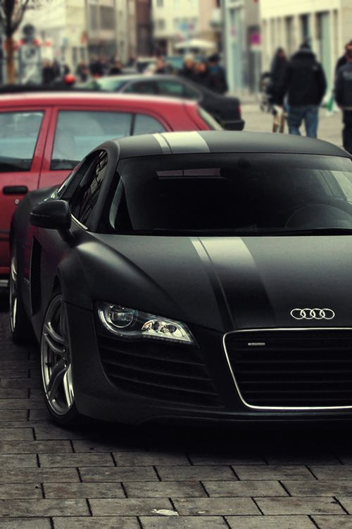

Porsche Cayenne
 more images
more images|  more images | The Audi R8 (Typ 42) is a mid-engine, 2-seater sports car, which uses Audi's trademark quattro permanent all-wheel drive system. It was introduced by the German car manufacturer Audi AG in 2006. The car is exclusively designed, developed, and manufactured by Audi AG's high performance private subsidiary company, Audi Sport GmbH (formerly quattro GmbH),and is based on the Lamborghini Gallardo platform. |
|
more images |
The Porsche Cayenne (Type 9PA [Designated 955 in online forums, not recognized by Porsche Cars AG]) is a mid-size luxury crossover sport utility vehicle produced by the German manufacturer Porsche since 2002, with North American sales beginning in 2003. It is the first V8-engined vehicle built by Porsche since 1995, when the Porsche 928 was discontinued. It is also Porsche's first off road Varient sports car since its Super and Junior tractors of 1950s, and the first Porsche with four doors. Since 2008, all engines have featured direct injection technology. |